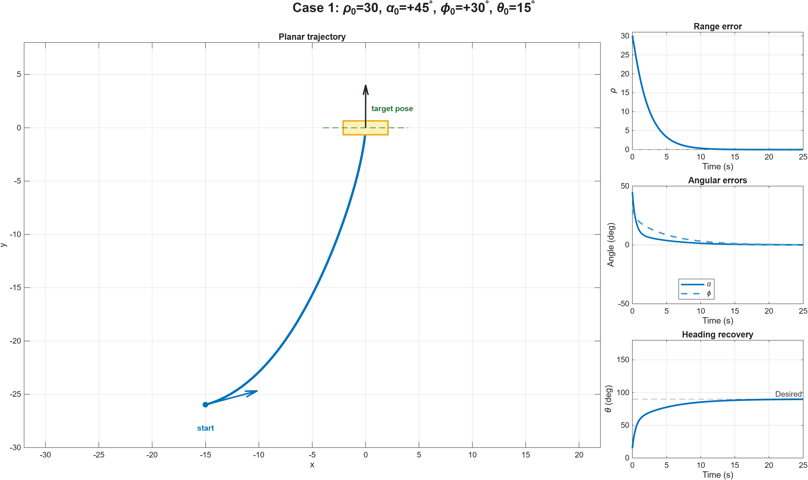
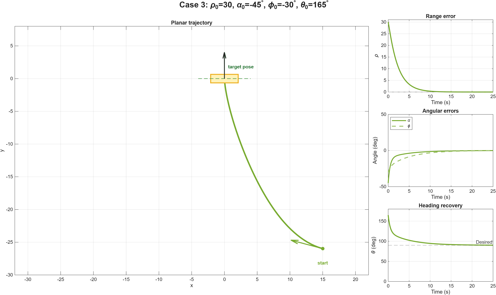
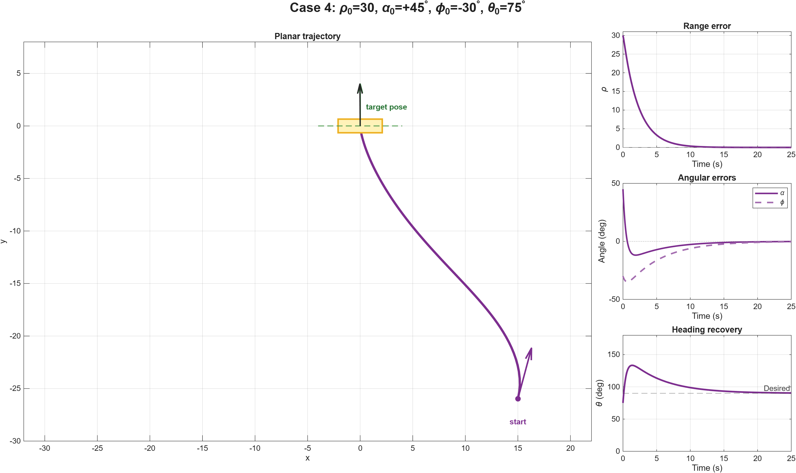

Case 1
ρ0 = 30, α0 = +45°, φ0 = +30°, θ0 = 15°

ECE 699 Course Project · Fall 2022
MATLAB implementation and visualization of a course-provided unicycle-model feedback controller, evaluated across four distinct initial-position and heading cases.
The unicycle/differential-drive model and feedback-control theory were provided through ECE 699 course materials and the instructor. They are not presented here as original theoretical contributions.
The broader team project also included PyBullet modeling and a physical robot implementation. This page presents only my MATLAB simulation, visualization, and analysis work.
Numerical Validation
MATLAB Results
Each case is shown on its own row so that its animation and static trajectory-and-error result remain easy to inspect independently.
ρ0 = 30, α0 = +45°, φ0 = +30°, θ0 = 15°

ρ0 = 30, α0 = −45°, φ0 = +30°, θ0 = 105°

ρ0 = 30, α0 = −45°, φ0 = −30°, θ0 = 165°

ρ0 = 30, α0 = +45°, φ0 = −30°, θ0 = 75°
